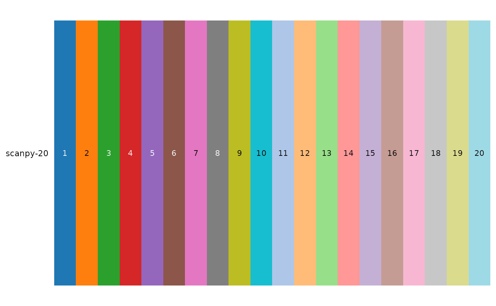
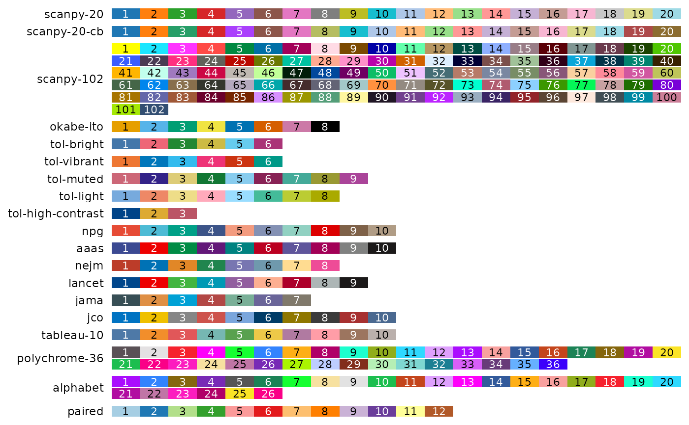
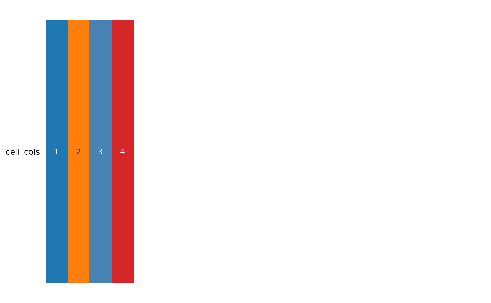
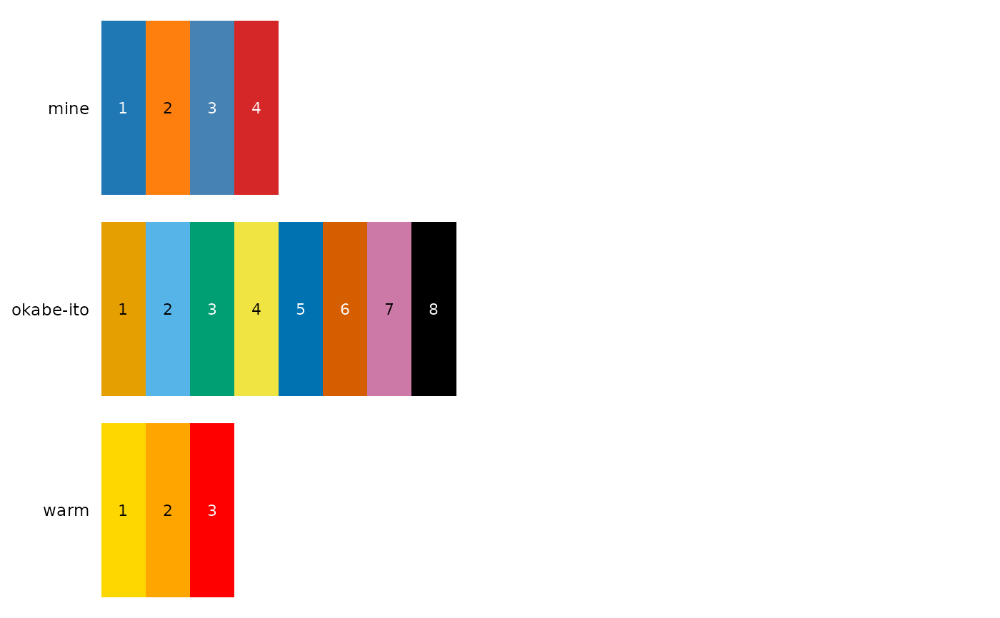

Draws each palette as a row of swatches numbered by their index, so that colours can be picked and reordered with `bt_palette(name)[indices]`. Long palettes wrap onto several rows. Palettes defined by many colours (the viridis family) are drawn as a smooth ramp instead. Names ending in "_r" show a palette reversed. Your own colours can be shown too (e.g. the colours picked for cell types), alone or next to the palettes of the package. The plot fills the plotting window; it is meant for browsing, not for publication. All palettes of the package are also shown on the website's palette page.
Arguments
- palettes
What to show: NULL (default) for all palettes of `type`; palette names, e.g. `c("scanpy-20", "npg")`; a vector of colours (names or hex codes), shown as one row; or a list whose elements are palette names or vectors of colours, one row each, labelled by the list's names (by the palette name, or the element's position, when unnamed)
- type
Types to show when `palettes` is NULL: any of "qualitative", "sequential" and "diverging". If NULL (default), all
- ncol
Number of swatches per row, default is 20
- ...
`names`, the name of `palettes` before 1.0.0, accepted with a deprecation warning
Examples
show_palettes("scanpy-20")

show_palettes(type = "qualitative")

# Your own colours, alone or next to palettes of the package
cell_cols <- c(T = "#1f77b4", B = "#ff7f0e", NK = "steelblue", Mono = "#d62728")
show_palettes(cell_cols)

show_palettes(list(mine = cell_cols, "okabe-ito", warm = c("gold", "orange", "red")))
